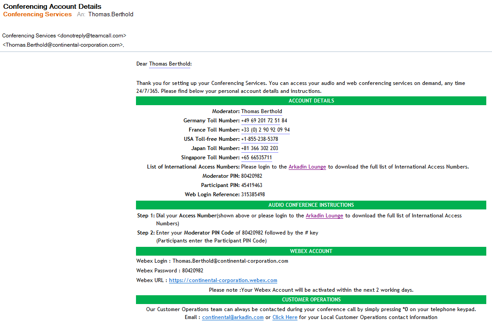

Dear Thomas Berthold: Thank you for setting up your Conferencing Services. You can access your audio and web conferencing services on demand, any time 24/7/365. Please find below your personal account details and instructions.
ACCOUNT DETAILS Moderator: Thomas Berthold Germany Toll Number: +49 69 201 72 51 84 France Toll Number: +33 (0) 2 90 92 09 94 USA Toll-free Number: +1-855-238-5378 Japan Toll Number: +81 366 302 203 Singapore Toll Number: +65 66535711 List of International Access Numbers: Please login to the Arkadin Lounge to download the full list of International Access Numbers. Moderator PIN: 80420982 Participant PIN: 45419463 Web Login Reference: 315385498 AUDIO CONFERENCE INSTRUCTIONS Step 1: Dial your Access Number(shown above or please login to the Arkadin Lounge to download the full list of International Access Numbers) Step 2: Enter your Moderator PIN Code of 80420982 followed by the # key
(Participants enter the Participant PIN Code) WEBEX ACCOUNT Webex Login : Thomas.Berthold@continental-corporation.com Webex Password : 80420982 Webex URL : https://continental-corporation.webex.com Please note :Your Webex Account will be activated within the next 2 working days. CUSTOMER OPERATIONS
Our Customer Operations team can always be contacted during your conference call by simply pressing *0 on your telephone keypad.
Email : continental@arkadin.com or Click Here for your Local Customer Operations contact information
